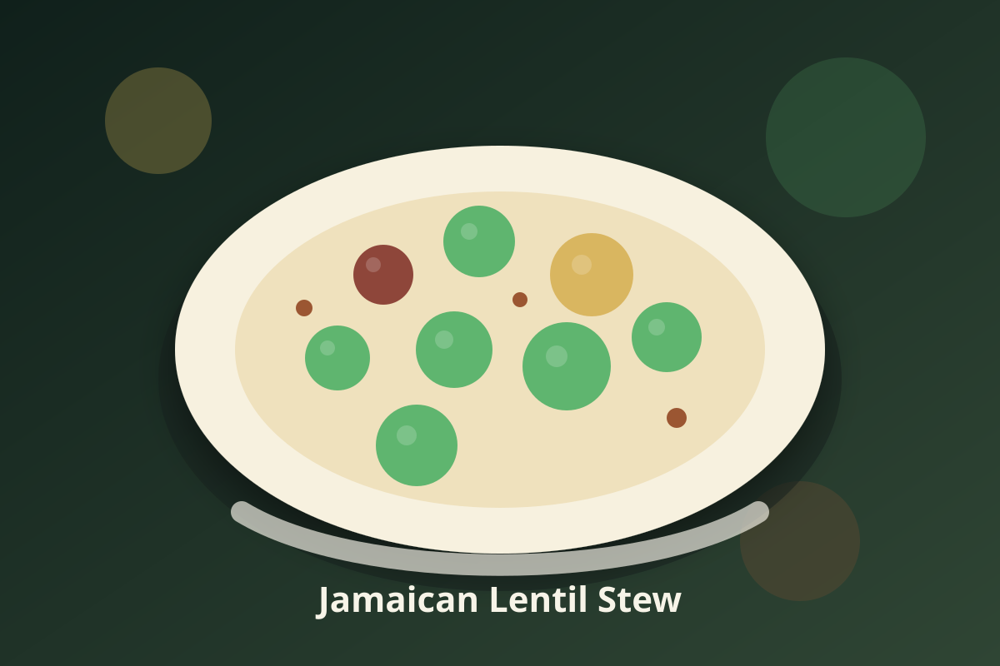

Jamaican · Vegan
Jamaican Lentil Stew
A vegan Jamaican staple built for weeknight cooking and appliance-friendly instructions.

Ingredients
- 1 cup dried lentils, rinsed
- 1 cup diced carrots
- 2 cups diced potatoes
- 1 cup light coconut milk
- 1/2 teaspoon ground allspice
- 1 teaspoon fresh thyme leaves
- 2 cloves garlic, minced
- 1 tablespoon lime juice
Instructions
- Steam potatoes: add 1 cup water to the Instant Pot inner pot, then set potatoes on a rack until just tender before adding them to the main preparation.
- Pressure cook lentils with aromatics.
- Stir in coconut milk and simmer until rich.
- Finish with lime juice and fresh herbs to brighten the flavor.